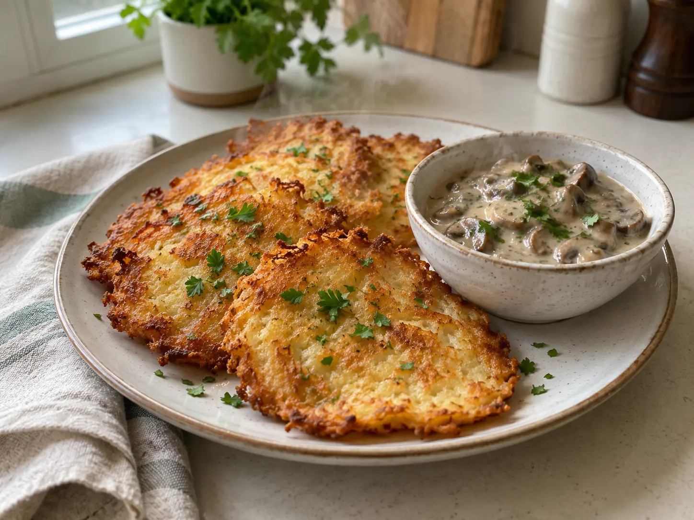

Placki ziemniaczane jak u mamy. Dodałam do ciasta odrobinę majeranku, a sos zrobiłam ze świeżych podgrzybków.

12 osób ugotowało · 10 zrobiłoby ponownie
Sobota, 12 września
148 osób gotuje dzisiaj
Zdjęcie i kilka słów wystarczą.
Placki ziemniaczane jak u mamy. Dodałam do ciasta odrobinę majeranku, a sos zrobiłam ze świeżych podgrzybków.

Mój zakwas ma dziś pięć lat. Z tej okazji nastawiłem żytni z prażoną cebulą. Wieczorem pokażę, jak wyrósł.
Znajdź coś dobrego
Przepisy i dania od ludzi, którzy naprawdę je ugotowali.
18 sprawdzonych przepisów
Zobacz zupyOd chleba po szarlotkę
Zobacz wypiekiPrzepis Haliny Nowak
Chrupiące na brzegach, miękkie w środku. Prosty obiad z produktów, które zwykle są w domu.
Zetrzyj ziemniaki i cebulę. Odciśnij nadmiar wody.
Dodaj jajka, mąkę, sól i odrobinę majeranku. Wymieszaj.
Smaż niewielkie placki z obu stron na złoty kolor.
Grzyby podsmaż, dodaj śmietanę i duś 10 minut.
Twoje zapisane rzeczy
Wszystko, do czego chcesz wrócić — bez szukania od nowa.
Na przykład „Na niedzielę” albo „Do wypróbowania”.
Twój profil
@basiawgarach · Warszawa
Gotuję prosto, po domowemu i zawsze z dużą ilością koperku.
Jeszcze nic dziś nie dodałaś.